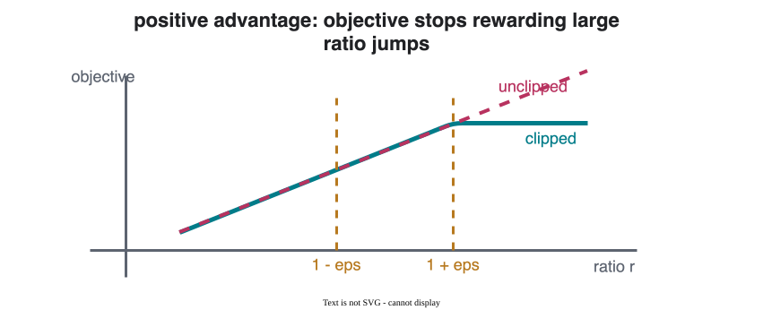

CS 463G & CS 663
(Intro to) AI
Lecture 34: PPO and GRPO
Fall 2026
Policy-gradient methods are powerful, but naive policy updates can be unstable.
From policy gradients, the basic update is:
\theta \leftarrow \theta + \alpha \nabla_\theta J(\theta)
The problem:
PPO is built around a simple control knob: keep the new policy close to the policy that collected the data.
Trust Region Policy Optimization (TRPO) directly constrains policy change:
\max_\theta \; \mathbb{E}_t \left[ \frac{\pi_\theta(a_t\mid s_t)} {\pi_{\theta_{\text{old}}}(a_t\mid s_t)} A_t \right] \quad \text{s.t.} \quad D_{\mathrm{KL}}(\pi_{\theta_{\text{old}}}\,\|\,\pi_\theta)\leq\delta
PPO compares the new policy to the old policy with:
r_t(\theta) = \frac{\pi_\theta(a_t\mid s_t)} {\pi_{\theta_{\text{old}}}(a_t\mid s_t)}
Interpretation:
| Ratio | Meaning |
|---|---|
| r_t(\theta)=1 | New policy gives the sampled action the same probability |
| r_t(\theta)>1 | New policy makes the sampled action more likely |
| r_t(\theta)<1 | New policy makes the sampled action less likely |
PPO maximizes:
L^{\text{PPO}}(\theta) = \mathbb{E}_t \left[ \min\left( r_t(\theta)A_t,\; \operatorname{clip}(r_t(\theta),1-\epsilon,1+\epsilon)A_t \right) \right]
If the policy update tries to move too far, clipping removes the extra incentive.
\epsilon is usually small, often around 0.1 to 0.2.

If A_t>0, PPO wants to increase the probability of a_t.
Clipping prevents increasing it too much.
If A_t<0, PPO wants to decrease the probability of a_t.
Clipping prevents decreasing it too much.
The objective is conservative on purpose: accept useful improvement, reject excessive movement.
Common use cases:
PPO became popular because it is a practical compromise: not the most theoretically exact, but robust and implementable.
PPO usually uses both:
For large language models, the critic can be expensive:
Can we estimate advantages without training a separate value model?
Group Relative Policy Optimization (GRPO) samples several responses for the same prompt.
For one prompt q_i:
\{o_{i,1}, o_{i,2}, \dots, o_{i,G}\} \sim \pi_\theta(\cdot\mid q_i)
Then compute rewards:
r_{i,j}=r(q_i,o_{i,j})
Instead of asking “how good is this response absolutely?”, GRPO asks “how good is this response compared with the other responses for the same prompt?”
Normalize rewards within each group:
A_{i,j} = \frac{ r_{i,j}-\operatorname{mean}(\mathbf{r}_i) }{ \operatorname{std}(\mathbf{r}_i) } ,\qquad \mathbf{r}_i=\{r_{i,1},\dots,r_{i,G}\}
Interpretation:
| Feature | PPO | GRPO |
|---|---|---|
| Policy update | Clipped policy-ratio objective | PPO-style clipped update |
| Advantage source | Often uses value-function critic | Group-relative rewards |
| Extra model | Critic/value model | No separate critic |
| Natural setting | General RL and RLHF | LLM reasoning-style training |
GRPO keeps PPO’s conservative update idea, but changes how the advantage signal is estimated.